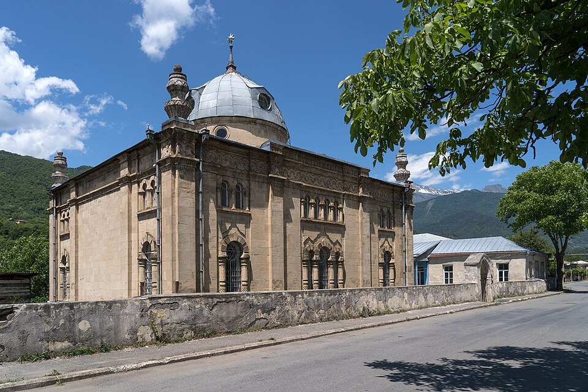

Ганатехи

Садитесь ближе к печке, тут почти две тысячи метров, ночью и летом холодно. Вы мой самый тихий турист за двадцать лет. Три часа ехали из Кутаиси, и вы ни разу не спросили, правда ли, что Сталин пил Хванчкару. Я даже забеспокоился. У меня на этот вопрос есть три ответа: для китайцев, для немцев и для русских, а вам ни один не пригодился. Ну и ладно. Вам я расскажу то, чего туристам не рассказываю.
А маму не трогайте, пусть себе месит. Завтра праздник, а к празднику у нас пекут ганатехи. Это хачапури с орехом и сыром, круглый. Тесто ставят с вечера, а пекут перед рассветом. Утром женщина берёт его на ладонь, идёт босиком к церкви и три раза обходит её кругом, а люди во дворе отламывают куски. Оттуда и имя: «ганатехи» — значит «отломленный». И самое главное: с утра и до тех пор, пока хачапури не разломали, она не говорит ни слова. Ни с кем. Даже со мной. Для меня это каждый год самое страшное утро: моя мать молчит.
Мы сейчас в Мравалдзали, это самое высокое село в Раче, тридцать километров вверх от Они. Живёт тут сейчас человек десять, зимой меньше. Это дом моей бабушки Тасо, она отсюда вышла замуж в Они. А праздник здешний, Святого Георгия Мравалдзальского. У нас даже здороваются так: «Да хранит тебя Святой Георгий Мравалдзальский». Немцы записывают это в блокнот, а потом пытаются сказать по-грузински, и выходит такое, что Святой Георгий, думаю, понимает и прощает.
Работа у меня такая: микроавтобус и тур «Рача за один день», пять часов программы. Никорцминда, все снимают её с одного места, я даже камень туда положил, чтобы маленьким людям было на что встать. Дегустация Хванчкары. Обед с шкмерули, это курица в сливках с чесноком, названа по нашему селу Шкмери. В Шкмери, между прочим, её так не делают, но я этого никому не говорю, и вы не говорите. Не смотрите так, это я пошутил. Но проверять не ездите.
В Они приезжают редко. А если приезжают, то чаще всего из Израиля, к синагоге. Синагоге в Они сто тридцать с лишним лет, строили в тысяча восемьсот девяносто пятом, по образцу варшавской, и она самая старая из действующих в Грузии. Туристам я рассказываю, что в семнадцатом году пришли большевики её ломать, а весь город, евреи и грузины, встал вокруг и не дал. Это правда, так и было. Туристы плачут, и я не мешаю. А вам я добавлю то, чего туристам не говорю: в Они евреев была треть города, а теперь их можно пересчитать по пальцам. В семидесятые уехали почти все. Так что когда мы стоим у синагоги, я молчу и считаю, что моё молчание тоже входит в программу.
На нашей улице в Они, через забор от бабушки, жила Эстер. Я её не помню, меня ещё не было. Я знаю её по бабушкиным рассказам, а бабушка рассказывала про неё чаще, чем про деда. Эстер торговала на рынке тканями и знала всё про всех: кто к кому сватается, у кого сын в Кутаиси поступил, а у кого не поступил, хотя отец возил туда барана. Бабушка говорила, что ни радио, ни газета «Заря Востока» в Они не нужны были, была Эстер.
На праздник вся улица ехала сюда, наверх, на колхозном грузовике. Не только грузины. Эстер ездила каждый год, ей нравилось, что тут столы прямо на траве и можно послушать сразу три села. Ночевали вот в этом доме, на полу, на бурках. Бабушка ставила тесто вечером, пекла в темноте, а утром разувалась и шла к церкви, на ладони ганатехи. И Эстер шла рядом. До церковной ограды, дальше она не ходила, стояла у ворот и ждала.
И всю дорогу она говорила. Понимаете? Бабушке нельзя открыть рот, а рядом идёт человек и рассказывает, что зять заведующего складом купил «Волгу», и все знают, на какие деньги. И кто из девушек сегодня на празднике будет смотреть на кого. И что у Тасо в прошлом году тесто было толще, чем у соседки, но Эстер никому не сказала. Бабушка шла босиком по холодной траве, с хачапури на ладони, красная, как гранат, и молчала. Она говорила потом, что три раза вокруг церкви давались ей легче, чем дорога до ограды. А потом, когда хачапури разломали и можно было говорить, она выходила к воротам и отвечала Эстер на всё сразу, по пунктам. Сначала про тесто.
Отломить от ганатехи мог кто угодно во дворе, это ведь милостыня. Но Эстер во двор не заходила, и бабушка оставляла ей кусок дома, отдельный, от другого хачапури. И Эстер его ела. Там ведь только тесто, орех и сыр, никакого мяса. Бабушка ей и лобиани пекла отдельно, без ветчины, а у нас в Раче лобиани без ветчины — это почти оскорбление. Но для Эстер можно было.
В семьдесят втором году они уехали. Тогда уезжали семьями, целыми дворами, один за другим. Бабушка рассказывала, что в Они в те годы каждую неделю кого-то провожали, и всегда получались полусвадьба, полупохороны: стол накрыт, а люди плачут. В последнюю ночь бабушка поставила тесто, хотя никакого праздника не было, и испекла ганатехи до рассвета, как положено. Утром вышла к машине, которая везла их в Тбилиси, и молча протянула Эстер хачапури на ладони. Эстер отломила кусок, а остальное бабушка завернула ей в полотенце на дорогу. И вот тут случилось то, чего на нашей улице не было ни разу за двадцать лет: Эстер ничего не сказала. Села в машину и уехала молча, и бабушка так и не узнала, что она хотела сказать.
Писем оттуда тогда почти не писали, а если писали, то так, чтобы никому не навредить. От Эстер пришла одна открытка: море, пальма, и на обороте по-грузински одна строчка: «Тасо, здесь жарко и некому рассказать». Бабушка держала её в буфете, за стеклом, рядом с иконкой Святого Георгия. Обе друг другу не мешали.
А потом был девяносто первый. Это я уже помню сам, мне было четырнадцать. Двадцать девятое апреля, час дня, мы сидели на уроке. Земля так дёрнулась, что парты поехали к доске. Про то, что было дальше, я туристам не рассказываю и вам много не скажу. Семьсот сёл пострадало, дома сложились, люди потом до самой зимы жили в палатках. У синагоги стены пошли трещинами. А вечером кто-то приехал сверху и сказал, что церковь в Мравалдзали рухнула. Бабушка села на камень у ворот и сидела до темноты. Дом у нас устоял, а буфет упал. Стекло вдребезги, а открытка и иконка лежали на полу рядом, целые.
На следующий праздник бабушка всё равно испекла ганатехи и пошла наверх. Обошла три раза то, что было. А когда она умерла, стала ходить мама. И маме тоже ведь нужен человек, который будет идти рядом и разговаривать за двоих. Вот так это стал я. А я, сами видите, для этого человек подходящий, у меня профессия такая.
Теперь самое главное. Позапрошлым летом везу я группу из Израиля, девять человек. У синагоги все фотографируют, а одна женщина, постарше меня, в белой шляпе, спрашивает по-грузински, с ошибками, но понятно: а где тут была улица, на которой жила женщина по имени Тасо? У меня руль чуть из рук не выпал, хотя мы стояли. Это была внучка Эстер, зовут Двора. Она достала из сумки фотографию: две женщины стоят у забора, одна моя бабушка, а другая, совершенно очевидно, что-то рассказывает.
Я сдал группу в гостиницу и повёз Двору к маме. И тут выяснилось. Эстер в Израиле сорок лет подряд пекла ореховый хачапури на Шавуот. Это у них такой праздник в начале лета, когда положено есть молочное, так что хачапури с сыром попал точно в цель. Ставила тесто с вечера, пекла до рассвета, а утром требовала, чтобы в доме до завтрака никто не разговаривал. Вся семья думала, что это какой-то древний грузинский еврейский обычай. Двора даже друзьям так рассказывала. А тут мама ей объясняет, про босиком, про три раза и про то, чтобы молчать. Двора сначала смеялась, потом плакала, потом опять смеялась. Сказала: значит, бабушка сорок лет заставляла нас молчать за твою бабушку. Я ей ответил: не за неё, а вместо неё. У нас ведь тоже все молчали, кроме неё.
В этом году Двора приехала снова, уже не с группой, а к нам, на праздник. Она сейчас спит в той комнате, на бабушкиной кровати. Я её спросил, не смущает ли её, что хачапури печёт грузинка и несёт к церкви. Она сказала, что кашрут у них в семье соблюдала только бабушка, и то по праздникам, а этот хачапури бабушка сама сто раз ела, так что вопрос закрыт. Утром она пойдёт с мамой до ограды и будет молчать вместе с ней. А разговаривать за всех троих буду я. Мне не трудно, меня двадцать лет туристы на это тренируют.
Идите-ка сюда, мама кивает. Первый хачапури она всегда печёт пробный, с вечера, чтобы печку проверить. Он не обрядовый, его можно. Отламывайте вы первым, вы сегодня гость, а завтра будете уже своим. Рукой, а не ножом, от слова «отломить», я же говорил. А рецепт записывайте со мной, маме сейчас не до разговоров, у неё тесто подходит, а с утра ей и вовсе нельзя. Она мне его сто раз диктовала: муки сколько всегда, ореха и сыра поровну, и никому ни слова.
Ганатехи
На 4–5 хачапури.
Для теста
мука пшеничная — 1 кг
тёплая вода — 500 мл
соль — 1 ч. л.
сахар — 1 ч. л.
сухие дрожжи — 1 ч. л.
Для начинки
грецкие орехи — 500 г
молодой домашний сыр или имеретинский — 500 г
1. Растворите в тёплой воде дрожжи, соль и сахар, постепенно вмешайте муку и замесите мягкое тесто. Накройте полотенцем и оставьте на полчаса. По обычаю тесто ставят с вечера.
2. Вымесите тесто ещё раз, разделите на 4 части, а если духовка маленькая, на 5, и дайте постоять 10–15 минут.
3. Орехи измельчите, сыр разомните и хорошо перемешайте. Разделите начинку на столько же равных шаров, сколько частей теста.
4. Раскатайте кусок теста в лепёшку, положите в середину шар начинки, соберите края и защипните.
5. Снова раскатайте в круглый хачапури. Край защипните узором: в Раче для этого есть деревянная щипалка, но пальцами тоже можно.
6. Выпекайте в разогретой до 220 °C духовке 15–20 минут, до золотистого цвета.
Отламывают руками, ножом не режут. И если несёте к церкви, до первого куска молчите.
Тбилиси, ноябрь 2026